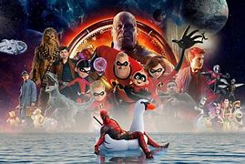

<ion-header [translucent]="true">
  <ion-toolbar>
    <ion-title>CatologTV</ion-title>
  </ion-toolbar>
</ion-header>

<ion-content [fullscreen]="true">
  <ion-header collapse="condense">
    <ion-toolbar>
      <ion-title size="large">Home</ion-title>
    </ion-toolbar>
  </ion-header>

  
  <div class="image-container">
    
  </div>
 
  <div class="ion-padding">
    <ion-button expand="full" color="danger" routerLink="/movies">
      Filmes Populares CATOLOG TV
    </ion-button>

    <ion-button expand="full" color="danger" routerLink="/sobre">
      Sobre o Projeto
    </ion-button>

  </div>
</ion-content>
